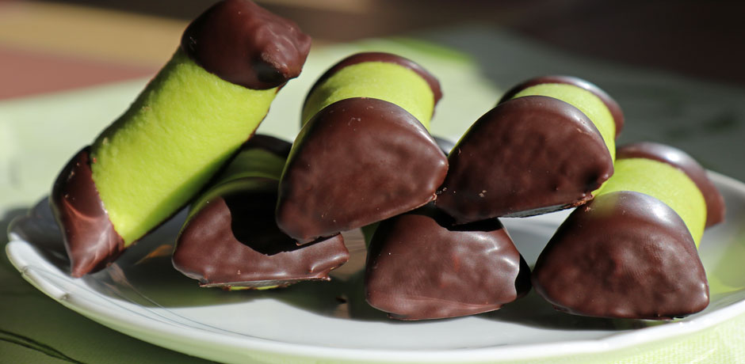

Bakrecept
Recept för alla brorsor
Startsida
Login
Observera att tiramisun kräver minst fem timmar i kylen (gärna över natten).
Vispa ihop äggulor och mascarpone med amaretto eller konjak till en slät smet.
Vispa äggvitorna fluffiga med elvisp. Tillsätt sockret lite i taget och fortsätt vispa tills smeten är fast och blank.
Vänd ner äggvitevispet i ägg smeten med hjälp av en slickepott.
Doppa den sockrade sidan av kexen hastigt i espresso. Lägg dem i en form (ca 25 x 30 cm, för 8 port).
Häll äggsmeten över kexen och ställ i kylen minst 5 timmar, gärna över natten.
Pudra över kakao vid servering och servera gärna med hallon.
⭐Smaklig måltid din jävel⭐
Till toppen ⬆Börja med att göra chokladsockerkakan om du inte redan har överbliven mjuk kaka hemma. Sätt ugnen på 150 grader (över- och undervärme) och smörj en sockerkaksform som rymmer minst 2 liter generöst med smör.
Smält smöret på medelvärme i en kastrull. Ta bort kastrullen från värmen, rör ner mjölken och låt svalna medan du gör resten av stegen.
Vispa ägg och strösocker riktigt vitt och pösigt i en bunke med elvisp. Sikta ner kakao, vetemjöl, bakpulver och vaniljsocker. Vänd försiktigt ihop till en tjock och jämn smet med slickepott.
Tillsätt smörmjölken och fortsätt vänd ihop smeten tills den blir jämn. Häll upp smeten i sockerkaksformen och grädda sockerkakan i nedre delen av ugnen i ca 45 minuter eller tills kakan är helt genomgräddad. Låt kakan svalna helt och hållet innan du använder den till dina dammsugare.
Vispa ihop smör, florsocker och havregryn krämigt med elvisp i en bunke. Tillsätt kaffet och vispa lite till. Smula ner kakan i bunken och vispa eller arbeta ihop med händerna till en formbar massa. Den ska vara krämig och lätt att forma. Upplever du att den är torr och smulig kan du gå ner med mer kaffe eller smör.
Dela degen i 2-3 delar och forma till rullar som är ca 2-4 cm breda. Lägg på en plåt med bakplåtspapper och ställ i kylen för att bli riktigt kalla innan du täcker och dekorerar dem.
Knåda marsipanen ordentligt tills den blir mjuk och formbar. Ta hjälp av majsstärkelse om du upplever att den blir lite kladdig. Kavla ut marsipanen ca 2-3 mm tjockt. Lägg en rulle i taget på marsipanen, rulla in den i marsipanen, ett varv per rulle och skär bort överflödig marsipan. Se till att marsipanen sluter ordentligt runt själva rullen.
Skär sedan den marsipantäckta rullen i bitar, så stora som du vill ha dem. Ställ tillbaka på plåten och in i kylen för att kallna igen medan du smälter chokladen.
Smält chokladen över ett vattenbad eller i microvågsugnen (några sekunder i taget, rör om mellan varje gång). Rör ner olja och låt svalna lite innan du doppar ändarna av dina kalla dammsugare i chokladen. Låt överflödig choklad rinna av innan du ställer tillbaka dem på plåten.
⭐Smaklig måltid din jävel⭐
 Till toppen ⬆Sätt ugnen på 180 grader. Smörj en bakform, 30 x 22 cm, med smör. Mjöla formens kanter lätt med vetemjöl och täck bottnen med bakplåtspapper.
Sikta mjöl, bikarbonat, bakpulver, salt och kanel i en bunke.
Vispa ägg och socker vitt och fluffigt i en annan bunke, minst 5 minuter med elvisp. Blanda sedan i olja och de torra ingredienserna. Rör till sist ner de rivna morötterna.
Fördela smeten jämnt i formen. Grädda mitt i ugnen i 30-35 minuter. Prova med sticka att kakan är genomgräddad. Låt svalna helt i formen.
Vispa med elvisp ihop smör och färskost till en vit och fluffig blandning
Tillsätt florsocker samt vaniljsocker och fortsätt att vispa tills det blir en fast och fin frosting.
Smeta ut skiten på kakan när den är klar.
⭐Smaklig måltid din jävel⭐
Till toppen ⬆